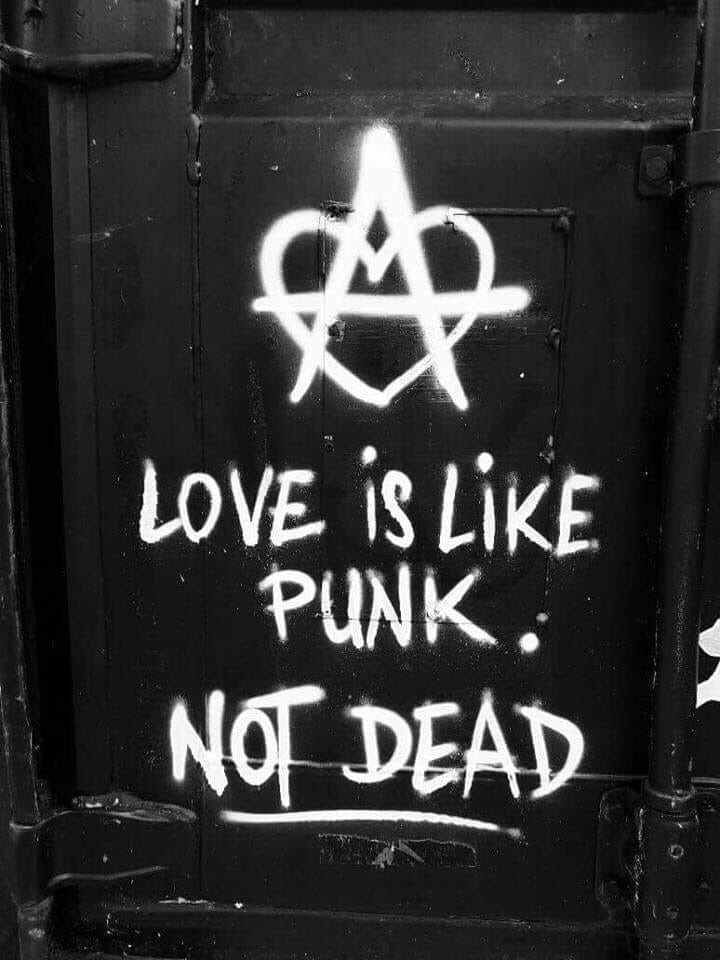

No Future Records baut auf der Idee auf, die bereits auf der Startseite deutlich wird: Punk- und Metal-Musik ist mehr als nur Klang, sie ist Ausdruck von Haltung, Geschichte und kultureller Identität. Genau aus diesem Verständnis heraus entsteht unser Sortiment, das sich bewusst aus Einzelstücken, limitierten Pressungen und besonderen Veröffentlichungen zusammensetzt. Hinter No Future Records steht ein Team aus drei Personen, die mit Punk und Metal groß geworden sind. Diese Musik hat uns über Jahre begleitet, geprägt und zusammengeschweißt. Unser gemeinsamer Hintergrund in der Szene beeinflusst nicht nur unseren Musikgeschmack, sondern auch unseren Anspruch an Authentizität, Qualität und Auswahl. Dass unser Angebot überwiegend aus Einzelstücken besteht, ist kein Zufall. Viele der Tonträger und Artikel stammen aus privaten Sammlungen, kleinen Labels oder längst vergriffenen Veröffentlichungen. Sie wurden in begrenzter Stückzahl produziert, über Jahre genutzt oder bewusst aufbewahrt und sind heute nicht mehr frei verfügbar. Jedes Stück bringt seine eigene Geschichte mit, was es einzigartig macht. Bei der Auswahl legen wir großen Wert auf Originalität, Zustand und musikalische Bedeutung. Unser Ziel ist es nicht, Massenware anzubieten, sondern besondere Stücke zugänglich zu machen, die eng mit den Ikonen, Strömungen und Entwicklungen von Punk und Metal verbunden sind. No Future Records versteht sich daher nicht nur als Händler, sondern als Ort für Musik mit Vergangenheit, Haltung und Bedeutung – für alle, die Punk und Metal nicht nur hören, sondern verstehen.
Hinter No Future Records stehen wir zu dritt – aufgewachsen mit Punk und Metal und bis heute eng mit dieser Musik verbunden. Unsere gemeinsame Leidenschaft prägt unsere Auswahl, unsere Arbeitsweise und den Umgang mit der Szene.
Nele ist 21 Jahre jung lebt für Punk.
 Nele
Nele
Chris ist 20 Jahre jung lebt für Classic Metal.
 Chris
Chris
Jess ist 22 Jahre jung lebt für Metalcore.
 Jess
Jess